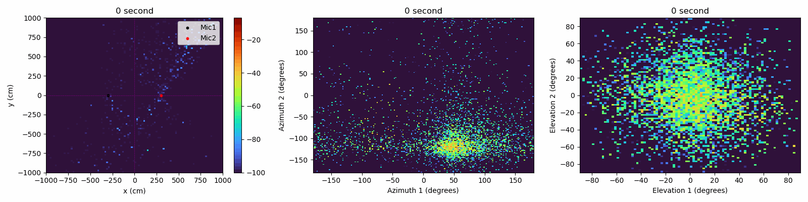
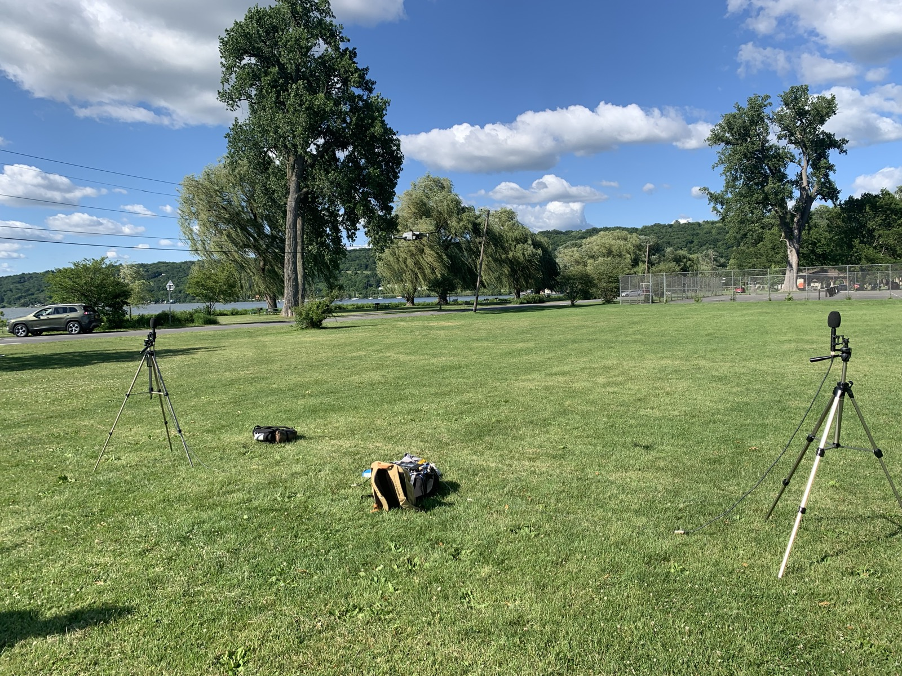

Research Projects
Applied research work across bioacoustics, sound source localization, and distributed AI systems.
Bioacoustic Source Separation and Localization
Built source separation workflows to improve bird species identification from acoustic recordings, with work spanning automated analysis in Jupyter and sound source localization using acoustic vector sensor data.

Distributed AI Systems for Dairy Analytics
Worked on distributed AI model training and data storage systems for dairy farms, connecting applied machine learning infrastructure with agricultural analytics.
Code and data are private due to research constraints.